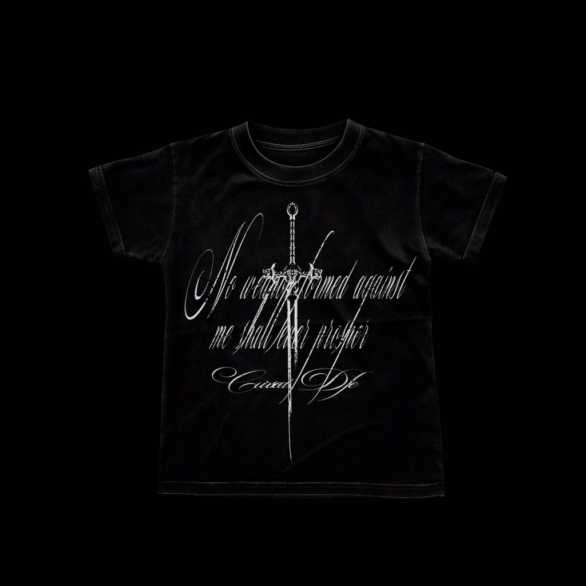
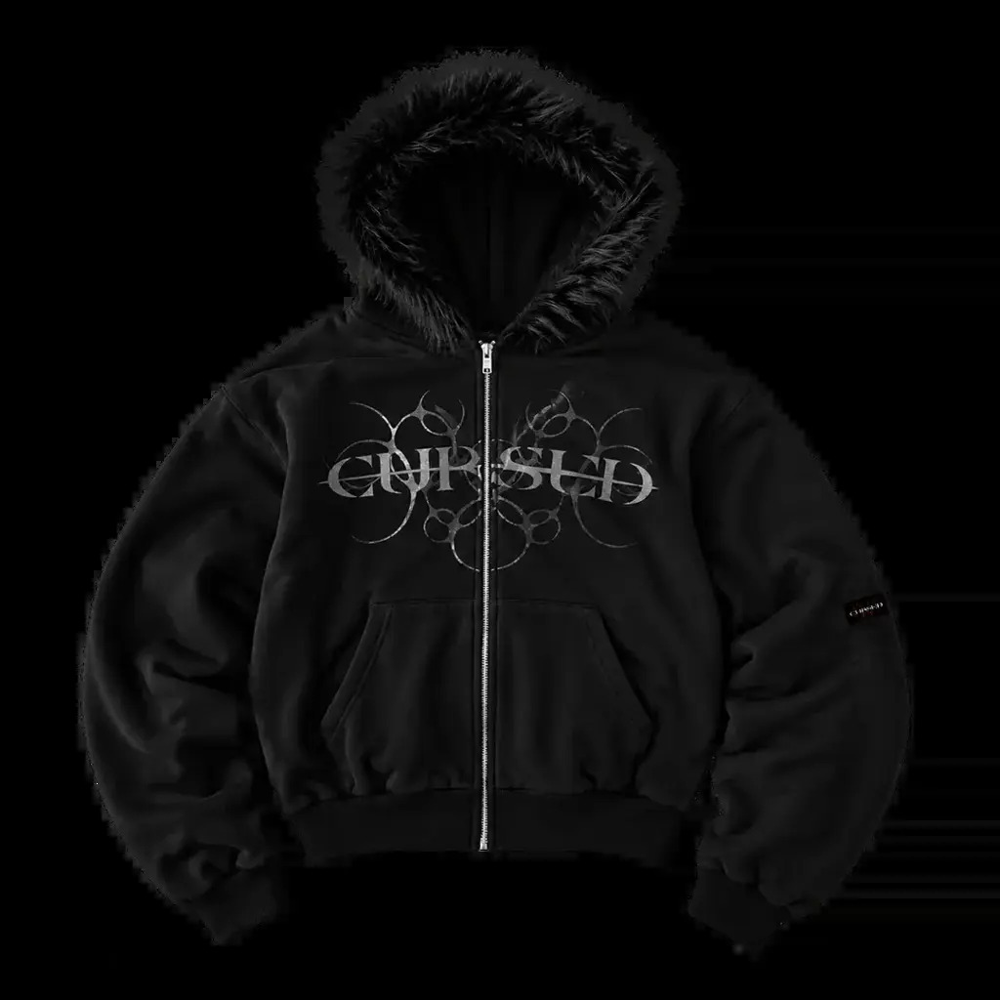

Uma empresa companheira a outras que busca espalhar marcas de Roupas Alternativas como a Cursed que é uma marca de roupas alternativas que busca expressar atitude, autenticidade e individualidade por meio da moda. Inspirada na estética dark, gótica e streetwear, a marca combina estilos marcantes com uma identidade visual ousada, criada para quem deseja fugir do convencional e mostrar sua personalidade através do que veste. Mais do que uma marca de roupas, a Cursed representa um estilo de vida que valoriza a liberdade de expressão e a originalidade. Cada peça carrega uma essência única, conectando moda alternativa, referências underground e uma estética sombria e moderna. A Cursed é feita para aqueles que não têm medo de ser diferentes e transformam seu próprio estilo em uma forma de expressão.

